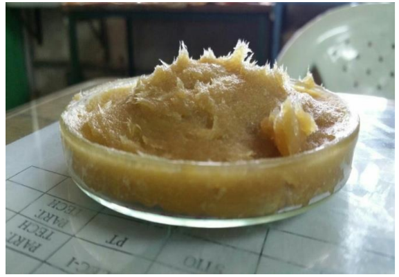
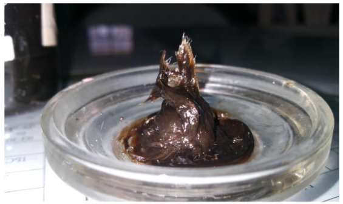

My Notes
REPURPOSING WASTE: GREASE SYNTHESIS FROM USED ENGINE OIL
Introduction:
- The proper disposal of used engine oil remains a pressing environmental concern, with improper handling often leading to detrimental soil pollution.
- Our project was to investigate possibilities of processing this waste material into a valuable resource through the scientific process of grease synthesis.
Experiment Design:
- As a part of project we counducted three experiments, each consisting the synthesis of grease through distinct combinations of reactants.
- Experiment 1 involved the utilization of NaOH and lube oil, while Experiment 2 employs Ca(OH)₂ and lube oil.
- Experiment 3 involved the production of grease from used engine oil using NaOH.
Reactive Properties and Grease Formulation:
- The cornerstone of grease production lies in the chemical process of saponification, wherein metal hydroxides interact with the triglycerides present in oils.
- When Ca(OH)₂ reacts with oil, the following saponification reaction occurs:
- Ca(OH)₂ + 3 RCOOCH₃ → Ca(RCOO)₂ + 2 CH₃OH
- Similarly, the reaction of NaOH with oil leads to the formation of sodium soap (grease) and methanol:
- 3 NaOH + RCOOCH₃ → 3 NaRCOO + CH₃OH

Sodium based Grease from Engine Lubrication oil (Unutilised oil)

Sodium based Grease from used Engine oil
Results and Limitations:
- Our experiments successfully yielded grease from used engine oil, demonstrating the feasibility of repurposing this waste material into a functional resource.
- However, due to time and resource constraints, detailed analyses of the grease properties, such as dropping point, endurance, temperature stability, and viscosity, were not conducted.
- Future research could be conducted into these aspects to ascertain the practical utility of the synthesized grease.